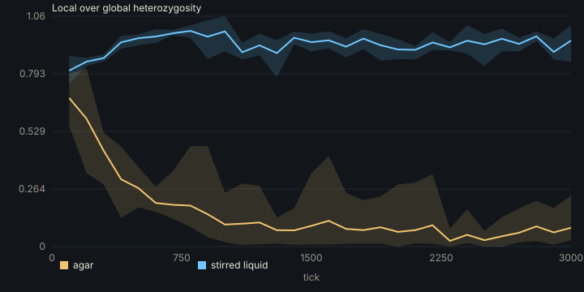
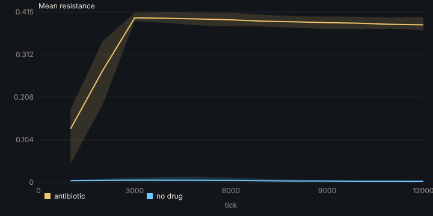
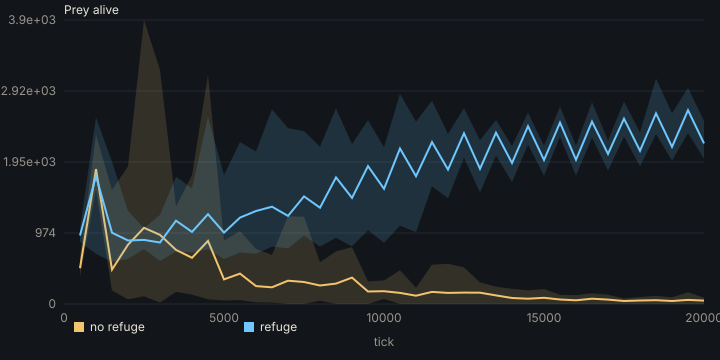
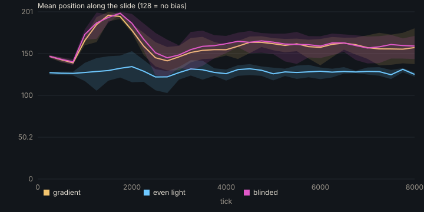
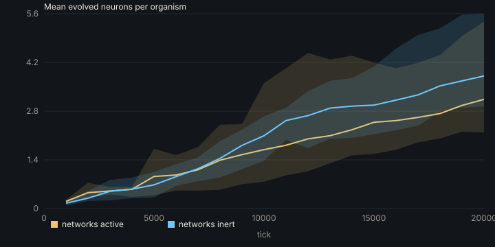

Methods and reproducibility
Find the validation results, implementation notes, run commands, and the limits that shape interpretation.
Each experiment runs a treatment and its controls from the same seeds (5 replicates; 8 for the refuge), and reports each outcome as a mean with a 95% confidence interval, and the difference between arms with a 95% Welch interval. Run any of them with ./run.sh experiment NAME; the full model is in the model description.
| Experiment | Treatment | Control | Difference (95% CI) |
|---|---|---|---|
| Range expansion: local over global heterozygosity, agar against stirred liquid | 0.058 | 0.935 | −0.877 (−0.929 to −0.825) |
| MEGA-plate: mean resistance, drug against none | 0.387 | 0.003 | 0.384 (0.368 to 0.399) |
| Predator and prey: prey alive, no refuge against refuge | 35 | 2,204 | −2,168 (−2,302 to −2,034) |
| Phototaxis: mean position, gradient against even light | 158.5 | 128.3 | 30.2 (15.3 to 45.0) |
| Phototaxis: mean position, gradient against blinded sense | 158.5 | 160.3 | −1.8 (−19.4 to 15.8) |
| Networks: mean evolved neurons, active against inert | 2.75 | 3.40 | −0.65 (−2.11 to 0.81) |
Two earlier claims from single runs did not survive their controls and are withdrawn: that cells steer toward the light, and that larger networks were being selected.

Range expansion. Lines are means over replicates; bands span the lowest to the highest replicate.

MEGA-plate.

Predator and prey: prey alive, with and without a refuge.

Phototaxis: the gradient and blinded arms overlap.

Evolved networks: active and inert grow alike.
Needs Flow 2.0 with the flowc C backend, a C11 compiler, and macOS for the window and the renderer's typography. Homebrew libomp makes the parallel loops use every core.
./run.sh life the life world, full screen ./run.sh life-bench headless: forms, trophic roles, energy, selection ./run.sh shot headless renders (settings in life_shot.flow) ./run.sh test tests, determinism, validation against theory ./run.sh the Genomic World
| Key | Action |
|---|---|
| Tab | Choose a world: preset, mode, 2D or 3D bodies |
| Space | Pause |
| [ ] | Fewer or more ticks per frame |
| wheel, drag | Zoom and pan; in 3D, right-drag turns |
| click | Follow an organism; Esc lets go |
| 3 | 2D or 3D view |
| V | Pixels, natural, bright-field or dark-field |
| F | Show the flow |
| G | Quality: fast, balanced or full resolution |
| H | Every key |
w(t) = 1 + 0.02825 t^0.2988, across 40 positive-generation bins from 500 to 50,000 generations. This fit describes the data and does not calibrate Life World.